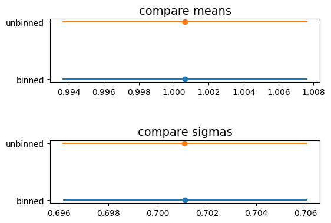

12.9. Binned fits solutions: Exercise 12.2#
Generate a file dati_2.txt containing 10,000 events
distributed according to a Gaussian probability distribution.
Write a program that fits the events saved in the file
dati_2.txtusing the binned and unbinned maximum likelihood methods, and compare the results of the two techniques.
12.9.1. sample generation and file saving#
from myrand import generate_TCL_ms
N_evt = 10_000
sample_gaus = generate_TCL_ms (1., 0.7, N_evt)
print (len (sample_gaus))
with open (r'dati_2.txt', 'w') as fp :
for item in sample_gaus:
# write each item on a new line
fp.write("%s\n" % item)
print('Done')
10000
Done
12.9.2. fit with binned maximum likelihood#
import numpy as np
from iminuit import Minuit
from math import floor, ceil
from iminuit.cost import ExtendedBinnedNLL
from matplotlib import pyplot as plt
from scipy.stats import expon, norm
bin_content, bin_edges = np.histogram (sample_gaus, bins = floor (N_evt/100),
range = (floor (min (sample_gaus)), ceil (max (sample_gaus))))
def mod_signal_bin (bin_edges, N_signal, mu, sigma):
return N_signal * norm.cdf (bin_edges, mu, sigma)
my_cost_func_bin = ExtendedBinnedNLL (bin_content, bin_edges, mod_signal_bin)
my_minuit_bin = Minuit (
my_cost_func_bin,
N_signal = sum (bin_content),
mu = np.mean (sample_gaus),
sigma = np.std (sample_gaus),
)
my_minuit_bin.limits['N_signal', 'sigma'] = (0, None)
my_minuit_bin.migrad ()
assert my_minuit_bin.valid
display (my_minuit_bin)
# get the estimate of the N_background and tau parameter for the final fit
mean_bin = [my_minuit_bin.values[1], my_minuit_bin.errors[1]]
sigma_bin = [my_minuit_bin.values[2], my_minuit_bin.errors[2]]
| Migrad | |
|---|---|
| FCN = 97.29 (χ²/ndof = 1.0) | Nfcn = 36 |
| EDM = 3.44e-12 (Goal: 0.0002) | |
| Valid Minimum | Below EDM threshold (goal x 10) |
| No parameters at limit | Below call limit |
| Hesse ok | Covariance accurate |
| Name | Value | Hesse Error | Minos Error- | Minos Error+ | Limit- | Limit+ | Fixed | |
|---|---|---|---|---|---|---|---|---|
| 0 | N_signal | 10.0e3 | 0.1e3 | 0 | ||||
| 1 | mu | 1.001 | 0.007 | |||||
| 2 | sigma | 0.701 | 0.005 | 0 |
| N_signal | mu | sigma | |
|---|---|---|---|
| N_signal | 1e+04 | 0 | 0.127e-3 |
| mu | 0 | 4.92e-05 | 0 |
| sigma | 0.127e-3 | 0 | 2.47e-05 |
12.9.3. fit with unbinned maximum likelihood#
from iminuit.cost import UnbinnedNLL
def mod_signal_unb (x, mu, sigma) :
return norm.pdf(x, mu, sigma)
my_cost_func_unb = UnbinnedNLL (sample_gaus, mod_signal_unb)
my_minuit_unb = Minuit (
my_cost_func_unb,
mu = np.mean (sample_gaus),
sigma = np.std (sample_gaus)
)
my_minuit_unb.limits["sigma"] = (0, None)
my_minuit_unb.migrad ()
assert my_minuit_unb.valid
display (my_minuit_unb)
mean_unb = [my_minuit_unb.values[0], my_minuit_unb.errors[0]]
sigma_unb = [my_minuit_unb.values[1], my_minuit_unb.errors[1]]
| Migrad | |
|---|---|
| FCN = 2.128e+04 | Nfcn = 22 |
| EDM = 1.7e-15 (Goal: 0.0002) | |
| Valid Minimum | Below EDM threshold (goal x 10) |
| No parameters at limit | Below call limit |
| Hesse ok | Covariance accurate |
| Name | Value | Hesse Error | Minos Error- | Minos Error+ | Limit- | Limit+ | Fixed | |
|---|---|---|---|---|---|---|---|---|
| 0 | mu | 1.001 | 0.007 | |||||
| 1 | sigma | 0.701 | 0.005 | 0 |
| mu | sigma | |
|---|---|---|
| mu | 4.92e-05 | 0 |
| sigma | 0 | 2.46e-05 |
12.9.4. comparison between the two#
fig, axes = plt.subplots (2, 1)
# setting the two sub-figures apart
fig.tight_layout (pad=5.0)
# plot means
axes[0].set_title ('compare means', size=14)
axes[0].errorbar (mean_bin[0], 'binned', xerr = mean_bin[1], marker = 'o')
axes[0].errorbar (mean_unb[0], 'unbinned', xerr = mean_unb[1], marker = 'o')
#plot sigmas
axes[1].set_title ('compare sigmas', size=14)
axes[1].errorbar (sigma_bin[0], 'binned', xerr = sigma_bin[1], marker = 'o')
axes[1].errorbar (sigma_unb[0], 'unbinned', xerr = sigma_unb[1], marker = 'o')
plt.show ()
